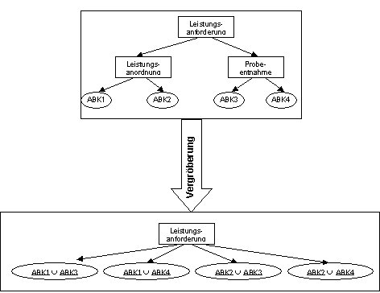

Via the is_part_of_relationships it is possible to coarsen and refine models. Refining and coarsening is not a function that is used in the context of modeling ("I want to refine a task now") - this is only possible through the is_part_of_relationships - but a function that is applied to a 'finished' model. This makes it easier to visualize models and to analyze them on any rough layer. The functions Coarsen and Refine refer to model elements.
The following rules apply to coarsening and refining: